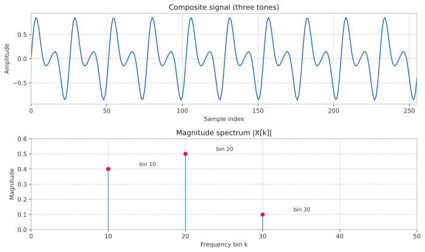

FFT
Overview
The Fast Fourier Transform (FFT) converts a block of time-domain samples into its frequency-domain representation and back. Q provides two transforms, each an object built for one size:
fft-
An FFT of
ncomplex values, in place. rfft-
An FFT of
nreal samples to then/2+1bins from DC to Nyquist, in place.
Both are built once with their size, which must be a power of two, and then transform any number of blocks of that size. Building one allocates everything it needs; a transform never allocates, so it is safe on the audio thread. A size can follow the sample rate: a frame of a given duration takes twice the samples at 96 kHz as at 48 kHz.
fft and rfft work in float. basic_fft<T> and basic_rfft<T> are the templates they come from, for double as well. Float transforms of practical sizes run on PFFFT, a SIMD FFT, when Q is built with it (see Backends).
Breaking change in v1.6. The compile-time functions fft<N>, ifft<N>, rfft<N>, irfft<N> and magspec<N> of v1.5 and earlier are gone, replaced by the fft and rfft objects. Code that calls them no longer compiles. See Migrating from v1.5 for the changes a client makes.
|

Data Layout
Complex Data
fft works on complex data packed as interleaved real and imaginary parts:
-
data = [ re(0), im(0), re(1), im(1), … , re(n-1), im(n-1) ]
So an n-point transform needs an array of 2n scalars. Bin k occupies data[2k] (real) and data[2k+1] (imaginary).
The forward transform applies no scaling: a unit-amplitude complex exponential at bin k produces a peak of magnitude n at that bin. For a real input, the energy splits between the bin k and its conjugate mirror n-k, so a real tone of amplitude A reads A * n/2 at its bin. The inverse divides by n, so a forward transform followed by the inverse restores the input to within rounding error.
Real Data
The spectrum of a real signal is conjugate-symmetric, so its upper half repeats the lower half. rfft computes only the bins that carry information, DC through Nyquist, at about half the cost of fft. It takes an array of n+2 scalars:
-
On input, the
nsamples:data = [ x(0), x(1), … , x(n-1), _, _ ] -
On output,
n/2+1bins:data = [ re(0), im(0), re(1), im(1), … , re(n/2), im(n/2) ]
The two extra scalars make room for the Nyquist bin. The imaginary parts of the DC and Nyquist bins are always zero, and the inverse ignores them. Scaling is the same as fft’s: the forward transform applies none, and the inverse divides by `n.
To remove everything above 5 kHz from a frame of 1024 samples at sps samples per second, zero the bins above it and transform back:
#include <q/fft/fft.hpp>
#include <vector>
...
namespace q = cycfi::q;
float sps; // samples per second
...
constexpr std::size_t n = 1024;
q::rfft f{n}; // build it once
std::vector<float> data(n + 2); // n samples, then room for n/2+1 bins
...
f.forward(data.data());
auto cutoff = std::size_t(5000.0f * n / sps); // the bin at 5 kHz
for (auto k = cutoff + 1; k <= n/2; ++k)
data[2*k] = data[2*k + 1] = 0.0f;
f.inverse(data.data()); // data[0 .. n-1]: the filtered frame| The transforms are in place: they overwrite the input array with the result. Keep a copy if you still need the original samples. |
Backends
With the CMake option Q_USE_PFFFT on (the default), the float transforms run on PFFFT, a SIMD FFT using NEON on ARM and SSE on x86: fft from 16 points up, rfft from 32. double, and the smaller sizes, use Q’s own implementation. The API, the data layout and the scaling are the same either way. Results agree to within rounding, but are not bit-identical between the two.
The time for one frame (copy a frame in, forward transform, inverse transform), in µs, measured with test/benchmark/fft_bench on an Apple M2:
n |
fft, Q’s own |
fft, PFFFT |
rfft, Q’s own |
rfft, PFFFT |
|---|---|---|---|---|
256 |
1.9 |
0.55 |
1.0 |
0.28 |
512 |
4.4 |
1.2 |
2.3 |
0.55 |
1024 |
9.6 |
2.4 |
5.1 |
1.1 |
2048 |
20.7 |
5.6 |
10.9 |
2.6 |
4096 |
44.2 |
11.4 |
23.5 |
5.3 |
Treat these as ratios: other machines, compilers and sizes give other numbers. Run fft_bench on your own target.
An object owns everything a transform uses: PFFFT’s setup for its size and its work space, or the tables of Q’s own implementation. Each object therefore makes one setup, for the one size it was built with. Because the work space is the object’s, two threads transforming at the same time need two objects.
PFFFT on x86 needs its buffers 16-byte aligned. Any float pointer still works: a misaligned one goes through a buffer in the object, at the cost of a copy. Declaring the data alignas(16) avoids the copy. ARM has no such requirement.
Q is header-only, and so is PFFFT as Q uses it: with the option on, Q’s CMake fetches PFFFT and gives libq the Q_USE_PFFFT definition and PFFFT’s include paths, and nothing is compiled. A build that does not use CMake gets Q’s own implementation, unless it defines Q_USE_PFFFT and adds PFFFT’s include/pffft and src directories to its include path. Turn PFFFT off with -DQ_USE_PFFFT=OFF.
Migrating from v1.5
Up to v1.5, the transforms were free functions with the size as a template argument. From v1.6 they are objects built with the size. Each call changes as follows:
| v1.5 | v1.6 |
|---|---|
|
|
|
|
A real signal through |
|
|
|
|
|
Build the object where you set up, not in the audio callback: its constructor allocates. The data layouts, and the scaling (none on the forward transform, 1/n on the inverse), are unchanged, so the code around the call stays the same.
A magnitude spectrum, before and after:
#include <q/fft/fft.hpp>
#include <algorithm>
#include <cmath>
#include <vector>
...
namespace q = cycfi::q;
constexpr std::size_t n = 1024;
std::vector<float> samples(n); // a frame of real samples
std::vector<float> mag(n/2 + 1); // the magnitude of each bin
...
// v1.5: std::array<float, 2*n> d{}; real slots only, then
// q::magspec<n>(d.data()); mag[k] = d[k];
q::rfft f{n};
std::vector<float> data(n + 2);
std::copy(samples.begin(), samples.end(), data.begin());
f.forward(data.data());
for (std::size_t k = 0; k <= n/2; ++k)
mag[k] = std::hypot(data[2*k], data[2*k + 1]);Declaration
template <std::floating_point T>
class basic_fft
{
public:
explicit basic_fft(std::size_t n);
std::size_t size() const;
void forward(T* data);
void inverse(T* data);
};
template <std::floating_point T>
class basic_rfft
{
public:
explicit basic_rfft(std::size_t n);
std::size_t size() const;
void forward(T* data);
void inverse(T* data);
};
using fft = basic_fft<float>;
using rfft = basic_rfft<float>;T is float or double. Copying an object makes a new setup for the same size, which allocates; moving one does not.
Template Instantiations
fft and rfft are the template instantiations of basic_fft and basic_rfft for float:
fft-
An FFT of
ncomplexfloatvalues. rfft-
An FFT of
nrealfloatsamples.
using fft = basic_fft<float>;
using rfft = basic_rfft<float>;Expressions
Notation
T-
A floating-point type,
floatordouble. n-
A
std::size_t, a power of two: the number of complex values (basic_fft) or real samples (basic_rfft, at least 2). f-
An object of type
basic_fft<T>. r-
An object of type
basic_rfft<T>. data-
A pointer to
2nelements of typeT(ninterleaved complex values). rdata-
A pointer to
n+2elements of typeT(nreal samples, orn/2+1interleaved complex bins).
Constructors
| Expression | Semantics |
|---|---|
|
Construct a |
|
Construct a |
|
Construct an |
|
Construct an |
| C++ brace initialization may also be used. |
Functions
| Expression | Semantics | Return Type |
|---|---|---|
|
Compute the forward FFT of the |
|
|
Compute the inverse FFT of the |
|
|
Compute the forward FFT of the |
|
|
Compute the inverse of |
|
|
Get the number of points. |
|
|
Get the number of samples. |
|
For a real input signal, the magnitude at bin k is std::hypot(rdata[2*k], rdata[2*k+1]) after r.forward(rdata).
|
Example
A guitar tuner’s display wants the strongest partial in the input. Window a frame of 2048 samples of in at sps samples per second, transform it, and find the bin with the most energy:
#include <q/fft/fft.hpp>
#include <cmath>
#include <numbers>
#include <span>
#include <vector>
...
namespace q = cycfi::q;
std::span<float const> in; // the guitar input, at least n samples
float sps; // samples per second
...
constexpr std::size_t n = 2048;
q::rfft f{n}; (1)
std::vector<float> data(n + 2);
for (std::size_t i = 0; i != n; ++i) (2)
data[i] = in[i] * 0.5f * (1 - std::cos(2 * std::numbers::pi_v<float> * i / n));
f.forward(data.data()); (3)
std::size_t peak = 1;
for (std::size_t k = 2; k < n/2; ++k) (4)
{
if (std::hypot(data[2*k], data[2*k + 1])
> std::hypot(data[2*peak], data[2*peak + 1]))
peak = k;
}
auto freq = peak * sps / n; (5)| 1 | Build the rfft once, where the tuner is set up: it allocates. |
| 2 | Load the samples with a Hann window, which keeps a partial’s energy from spreading across distant bins. |
| 3 | Compute the forward FFT in place: bin k is at data[2 * k] (real) and data[2 * k + 1] (imaginary). |
| 4 | Find the bin with the largest magnitude, skipping DC and Nyquist. |
| 5 | Convert the bin to Hz: bin k is centred on k * sps / n, here within 11 Hz at 44.1 kHz. A tuner refines this further. |
Implementation Details
| Implementation details are subject to change without notice. Rely only on the expressions above. |
Q’s own complex FFT is an iterative radix-2 Cooley-Tukey transform. Its twiddle factors are computed once, in double precision, and its bit-reversal order is a table; both are made by the constructor. Its own real FFT reads the n samples as n/2 complex values, z(m) = x(2m) + i x(2m+1), and transforms those with a complex FFT of half the size. Each pair of bins k and n/2-k of the result then separates into the transforms of the even and the odd samples, E(k) and O(k), and X(k) = E(k) + exp(-2πik/n) O(k). The inverse runs the same steps backwards.
PFFFT comes from Cycfi’s fork, cycfi/pffft, and is compiled into each translation unit that includes fft.hpp, inside a namespace of Q’s, with internal linkage. With Q_USE_PFFFT and without it, the classes live in different inline namespaces, so translation units built with and without it still link together, each with its own implementation.